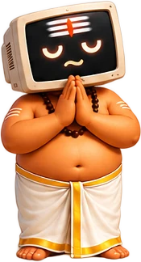
लोकाः समस्ताः सुखिनो भवन्तुஅனைவரும் இன்புற்றிருக்கட்டும் · May all beings be happy
Making astrology freeஜோதிடத்தை இலவசமாக்குவோம்
Good astrology software is expensive, and many astrologers, especially those just starting out, cannot afford it. Jothidar is an initiative to free astrologers from costly software, so skill and knowledge decide who succeeds, not who can pay for a licence. நல்ல ஜோதிட மென்பொருள் விலை உயர்ந்தது; புதிதாகத் தொடங்கும் பல ஜோதிடர்களால் அதை வாங்க முடிவதில்லை. செலவு மிக்க மென்பொருளிலிருந்து ஜோதிடர்களை விடுவிக்கும் முயற்சி ஜோதிடர். உரிமத்துக்குப் பணம் கொடுக்க முடிந்தவர் அல்ல, திறமையும் அறிவும் உள்ளவரே வெல்ல வேண்டும்.
Everything is open and free to use, forever. எல்லாமே திறந்தவை; எப்போதும் இலவசம்.
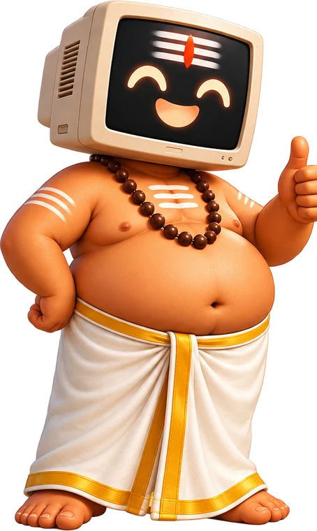
Meet Kaniyanகணியனைச் சந்தியுங்கள்
Kaniyan is the friendly helper behind Jothidar. He does the calculations, so you can spend your time guiding people. கணியன் ஜோதிடர் செயலியின் நட்பு உதவியாளர். கணக்கீடுகளை அவன் பார்த்துக்கொள்வான்; நீங்கள் மக்களுக்கு வழிகாட்டுங்கள்.
Kaniyan is named after Kaniyan Pungundranar, the Sangam-era Tamil poet who wrote “யாதும் ஊரே யாவரும் கேளிர்” – every place is home, everyone is kin. கணியன் என்ற பெயர் சங்க காலப் புலவர் கணியன் பூங்குன்றனாரை நினைவுகூர்கிறது. “யாதும் ஊரே யாவரும் கேளிர்” – எல்லா ஊரும் நம் ஊர், எல்லோரும் நம் உறவினர்.
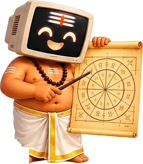
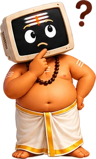
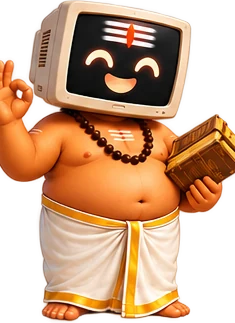
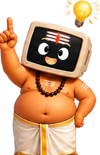
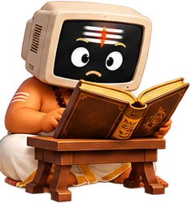
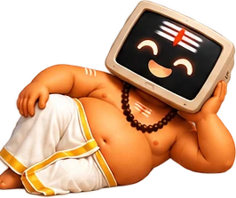
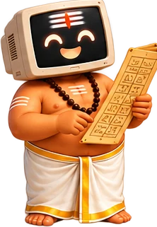
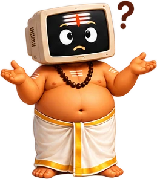
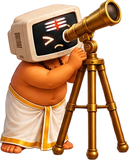
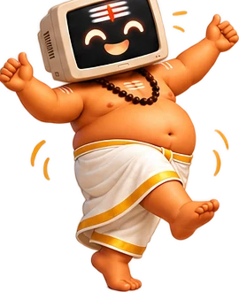
Three steps to a client reportமூன்று படிகளில் வாடிக்கையாளர் அறிக்கை
Add your logo, name and phone number
உங்கள் லோகோ, பெயர், தொலைபேசி எண்ணைச் சேர்க்கவும்
Set it up once. It appears on every report you make.ஒருமுறை அமைத்தால் போதும்; நீங்கள் உருவாக்கும் ஒவ்வொரு அறிக்கையிலும் வரும்.Make a jathagam for you or your client
உங்களுக்கோ உங்கள் வாடிக்கையாளருக்கோ ஜாதகம் உருவாக்கவும்
Enter date, time and place of birth. Charts and dasa appear instantly.தேதி, நேரம், ஊர் உள்ளிடவும். கட்டங்களும் தசையும் உடனே தெரியும்.Save the PDF
PDF சேமிக்கவும்
A branded report ready to hand to your client.வாடிக்கையாளருக்குக் கொடுக்கத் தயாரான உங்கள் அடையாள அறிக்கை.What you getஎன்ன கிடைக்கும்
Jathagamஜாதகம்
Rasi and navamsa charts, planet positions and dasa periods, calculated with the Swiss Ephemeris.ராசி, நவாம்சக் கட்டங்கள், கிரக நிலைகள், தசா புக்தி – Swiss Ephemeris கணக்கீட்டில்.
Poruthamதிருமணப் பொருத்தம்
Full marriage matching with a score and an explanation for each porutham.முழுமையான பொருத்தம், மதிப்பெண்ணுடன் ஒவ்வொரு பொருத்தத்தின் விளக்கமும்.
Your own brandஉங்கள் அடையாளம்
Your name, phone, address and logo on every PDF.ஒவ்வொரு PDF-லும் உங்கள் பெயர், தொலைபேசி, முகவரி, லோகோ.
Nothing to installநிறுவல் தேவையில்லை
Just open it in a browser. Birth-place search is built in.உலாவியில் திறந்தால் போதும். பிறந்த ஊர் தேடலும் உள்ளே உண்டு.
Privateதனிப்பட்ட தகவல் பாதுகாப்பு
Client details stay on your device. Nothing is uploaded.வாடிக்கையாளர் விவரங்கள் உங்கள் சாதனத்திலேயே இருக்கும். எதுவும் பதிவேற்றப்படாது.
Tamil & Englishதமிழ் & ஆங்கிலம்
The app and reports work in both languages.செயலியும் அறிக்கைகளும் இரண்டு மொழிகளிலும்.
Open sourceதிறந்த மூலம்
Free software under the GNU AGPL v3. Anyone can read, build and improve it.GNU AGPL v3 கீழ் கட்டற்ற மென்பொருள். யாரும் படிக்கலாம், மேம்படுத்தலாம்.
See it in actionசெயலியைப் பாருங்கள்
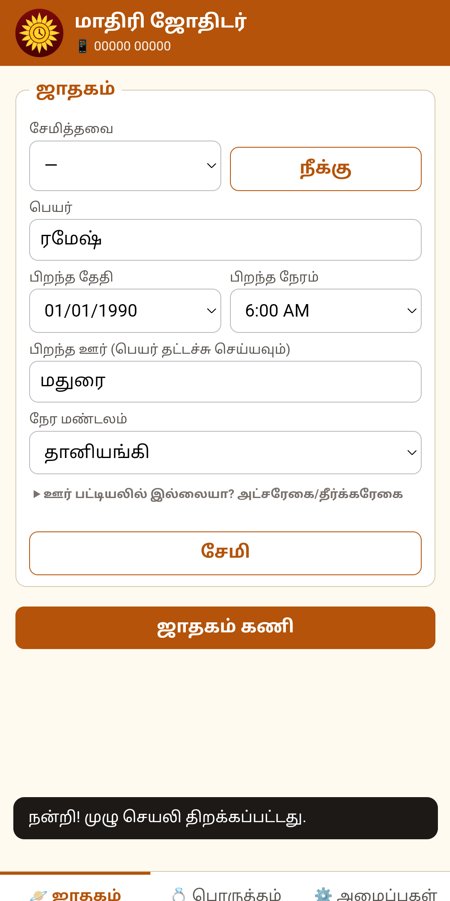
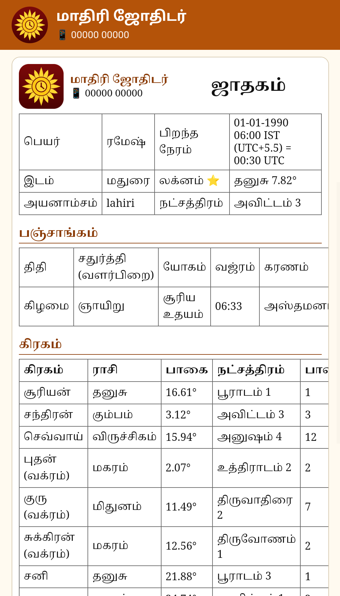
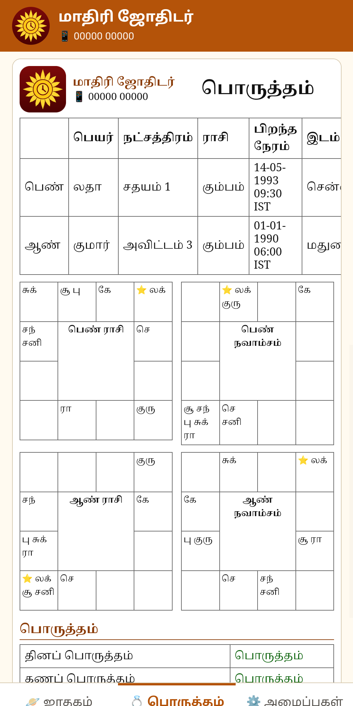
Support the initiativeஇந்த முயற்சிக்கு ஆதரவு தாருங்கள்
Jothidar will always be free. If it saved you time or money, an optional tip of any size helps keep it going. ஜோதிடர் எப்போதும் இலவசம். உங்கள் நேரத்தையோ பணத்தையோ மிச்சப்படுத்தியிருந்தால், விருப்பமிருந்தால் எவ்வளவு சிறிய தொகையும் தரலாம்.
Scan the QR with any UPI app, or pay to saz@slc. எந்த UPI செயலியிலும் QR-ஐ ஸ்கேன் செய்யவும், அல்லது saz@slc க்கு அனுப்பவும்.